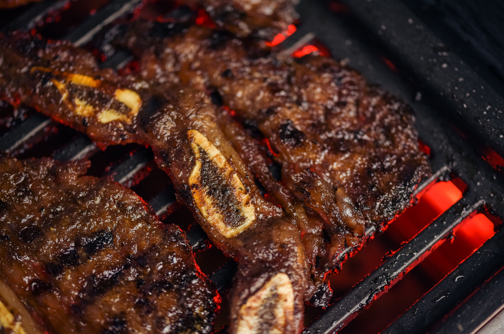

Korean BBQ Short Ribs (Galbi/Kalbi)

Description
Crispy charred edges, subtly sweet and savory marinated flanken cut short ribs.
These grilled, juicy, 8-10 inch strips of beef are a household favorite.
Ingredients
- 5 lbs short ribs, cut 1/2" thick, across the bones (flanken-style)
- 2/3 cup soy sauce
- 1/2 cup water
- 1/3 cup brown sugar
- 2 tablespoons honey
- 1/3 cup rice wine or mirin
- 2 tablespoons sesame oil
- 1/2 Asian pear
- 1 medium onion
- 8 cloves garlock
- 1 inch chunk ginger
- 2 tablespoons black pepper
- 3 scallions thinly sliced
- 1 tablespoon sesame seeds (optional)
Steps
Marinade
- Clean short ribs with water and a generous amount of salt. Pat dry, set aside
- Combine all but the scallions and sesame seed in a blender. Puree until smooth.
Add the scallion and sesame seeds. Do not blend.
- Divide the beef into 2 gallon size bags, divide the ribs and pour equal amounts
of marinade to each bag. Seal and refrigerate overnight. A minimum of 8 hours.
Remembering to flip at least once halfway through.
Cooking and Serving
- When ready to cook, remove the beef from the refrigerator. Remove from the marinade.
Drain and allow to rest at room temperature for 30 minutes. Preheat the oven for broil
or prepare a hot grill.
- Grill for 2-3 minutes or until desired doneness is reached.
- Place on a platter and serve hot with rice, lettuce, perilla leaves, ssamjang, kimchi,
gochujang, daikon and carrots, and any other banchan on the side.
Back to recipe list